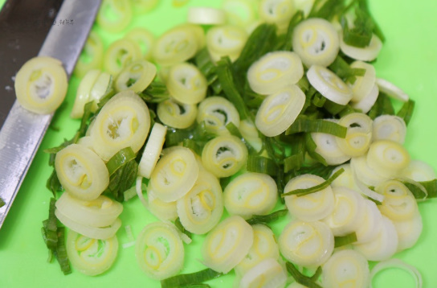
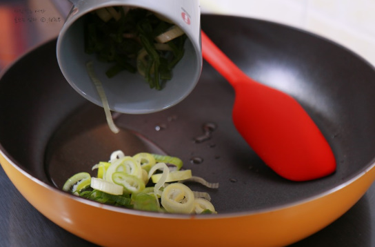
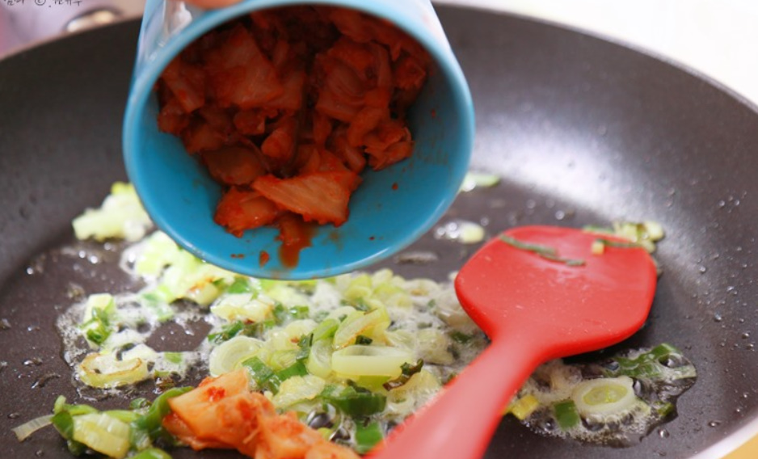
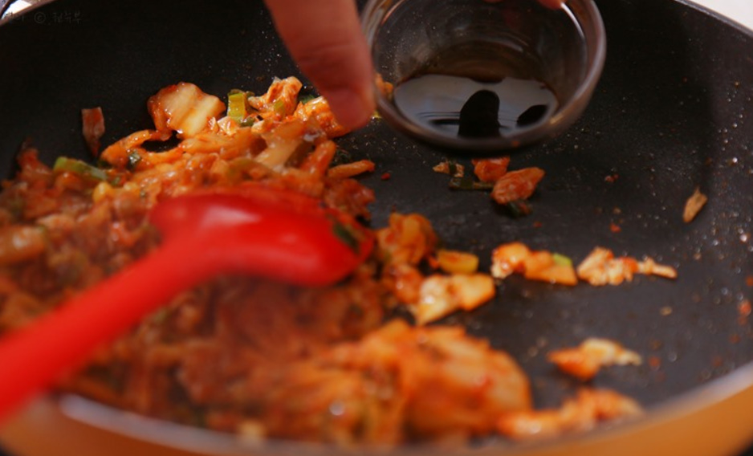
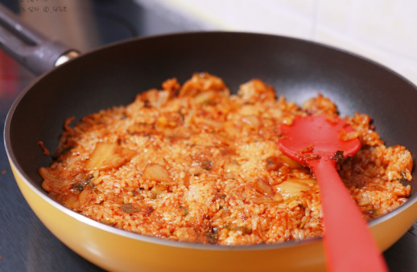
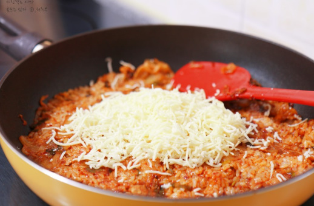
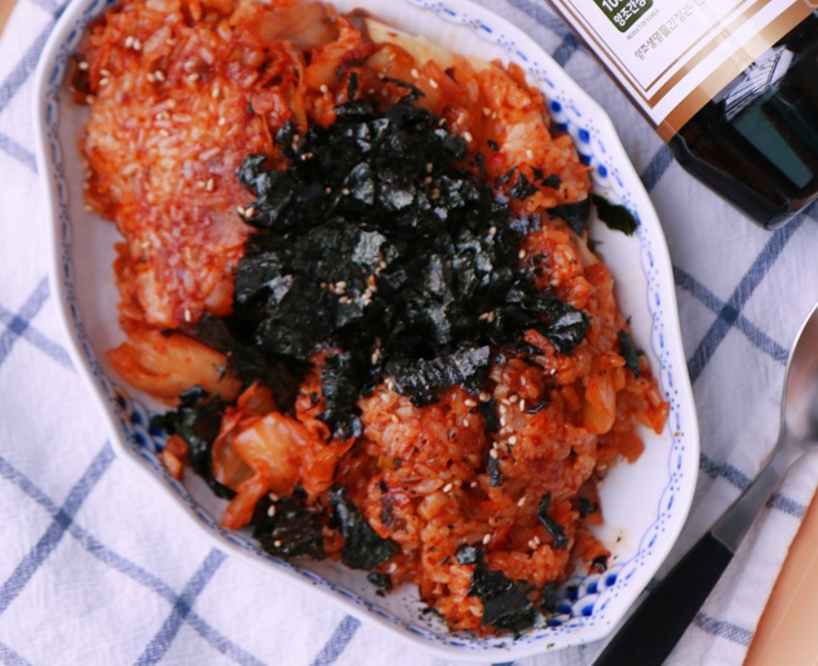

홈화면
수업연습
백종원 김치볶음밥 만들기
필요한 재료
김치1/3컵
대파1/2컵
밥1공기
치즈1/2컵
고춧가루 1숟가락
진간장 1숟가락
설탕 1작은술
김가루 깨 식용유1숟가락
- 파와 김치를 쏭쏭 썰어주세요

- 팬에 식용유를 두르고 파를 볶아주세요

- 파 기름과 파향이 날때쯤 김치를 넣어 같이 볶아주세요

- 볶은후, 볶아진 재료를 한곳에 모은후 그곳에 간장과 고춧가루 설탕을 넣어주세요

- 맛있게 잘 볶은후 준비해둔 밥을 같이 넣어주세요

- 그 후에 치즈를 뿌린후 약불로 익혀주세요!

7.마지막으로 김가루를 뿌리면 맛있는 김치볶음밥 완성!

맛있는 김치볶음밥 영상으로 보기
">
자료참고 블로그 가기